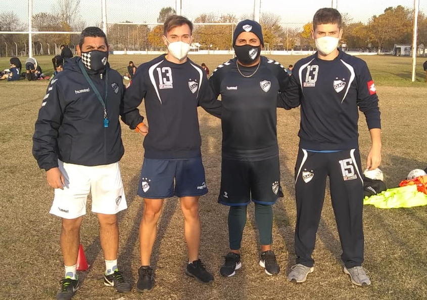

FORMACIÓN
- Técnico Aeronáutico titulado en E.E.S.T. N°7 TRQ “IMPA”. (2012-2018).
- Licenciatura en Educación Física en la Universidad Nacional de La Plata. (2019-Actualidad).
EXPERIENCIA
Recorrido como futbolista en etapa infantil y juvenil:
- Escuela Deportiva Infantil Quilmeña. EDIQ (infantiles).
- Quilmes Atlético Club (8va y 7ma división).
- Club Atlético Argentino de Quilmes (6ta y 5ta división).
- Asociación Deportiva Berazategui (Selectivo).
Preparador físico en fútbol juvenil, Quilmes Atlético Club (8va y 9na división) (marzo 2021-actualidad).
CUALIFICACIONES
- Inglés: Intermedio-Avanzado (tanto oral como escrito).
- Alemán: Básico (Extracurricular y certificado).
- Conocimientos en computación: Manejo intermedio (Paquete office completo-AutoCAD-Raptor-Internet-Redes sociales).
FORMACIÓN COMPLEMENTARIA
- Curso de Videoanálisis Orientado al Fútbol Profesional dictado por Matías Navarro García. (mayo 2018- junio 2018)
- Curso de Factores Humanos certificado por la Administración Nacional de Aviación Civil. (diciembre 2018)
- Curso online de Introducción a la Inteligencia Emocional dictado por Universidad Anáhuac a través de plataforma virtual EDX. (diciembre 2019-enero 2020)
- Licenciatura en Psicología en Universidad Nacional de La Plata. Sin finalizar. (febrero 2020-abril 2020)
- Taller de Introducción al Análisis Táctico en el Fútbol dictado por Vicente Muglia. (abril 2020-mayo 2020)
- Voluntario en el Centro de Asistencia al Suicida de Buenos Aires. (mayo 2020- marzo 2021)
- Curso sobre Genero, Masculinidades y Violencia certificado por Secretaría de Deporte del Ministerio de Turismo y Deportes de la Nación Argentina. (agosto 2020-septiembre 2020)
- Miembro de Toastmasters International. (febrero 2021 – actualidad)
- Voluntario en programa municipal Somos Quilmes. (febrero 2021 – actualidad)
- Curso de Introducción al Trabajo dictado por la Oficina de Empleo de la municipalidad de Quilmes. (marzo 2021 – junio 2021)
- Alumno de La Akademia de Buenos Aires (proyecto educativo sobre desarrollo personal y liderazgo). (abril 2021 – actualidad)
- Curso Diseño Web Inicial dictado por Universidad Nacional de Lanús. (junio 2021 – actualidad)